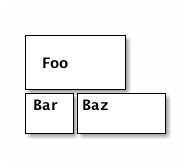
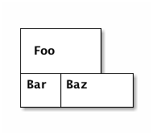
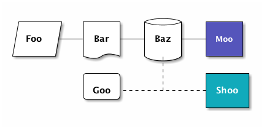
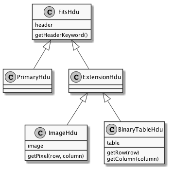
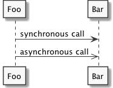
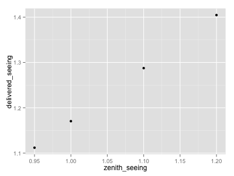
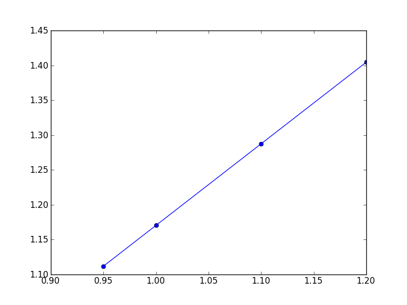

Emacs org-mode examples and cookbook
Emacs org-mode examples and cookbook
Table of Contents
- 1. Introduction
- 2. Header
- 3. Setting per-file
emacsvariables - 4. Subversion headers and introduction
- 5.
ditaafigures - 6. UML diagrams with
PlantUML - 7. Symbolic algebra with
GNU calc - 8. Using
org-modeas a spread sheet - 9. LaTeX equations
- 10. Inline formula
- 11. Figures and tables with captions and labels
- 12. Figures and tables spanning multiple text columns
- 13. Verbatim examples
- 14. Code examples
- 15. Running code, returning raw output
- 16. Running code, return
org-modetables - 17. Running code remotely
- 18. Running C code
- 19. Running java code
- 20. Margin notes in LaTeX
- 21. Querying a
PostgreSQLdatabase - 22. Interacting with
R - 23. Interacting with
python - 24. Setting environment variables (like
PYTHONPATH) - 25. Writing literate
pythoncode - 26. Doing automated testing of literate
pythonprograms - 27. Generating an
org-modesource block within anorg-modedocument - 28. LaTeX presentations with beamer
1 Introduction
This document provides examples of different things that can be done
in emacs org-mode files. This is not intended to be a
tutorial. The examples should provide a clue of what you need to look
up in the org-mode manual.
2 Header
The first set of lines of an org-mode file, each starting with #+,
configure org-mode's interpretation of the remainder of the file.
2.1 General metadata
An initial group sets the metadata used in any title pages, headers, footers, etc. used by the various exporters:
#+TITLE: Emacs org-mode examples #+AUTHOR: Eric H. Neilsen, Jr. #+EMAIL: neilsen@fnal.gov
2.2 Common export parameters
Configue the org-mode tags for forcing inclusion of exclusion of
sections in exported documents
#+EXPORT_SELECT_TAGS: export #+EXPORT_EXCLUDE_TAGS: noexport
Additional options handle interpretation of special characters in the buffer, numbering of headings, etc.
#+OPTIONS: H:2 num:nil toc:nil \n:nil @:t ::t |:t ^:{} _:{} *:t TeX:t LaTeX:t
2.3 emacs options
THE STARTUP keyword sets how the buffer is displayed when the file
is opened in emacs:
#+STARTUP: showall
2.4 HTML export options
A few other are used exclusively by the html exporter:
#+LANGUAGE: en #+INFOJS_OPT: view:showall toc:t ltoc:t mouse:underline path:http://orgmode.org/org-info.js #+LINK_HOME: http://home.fnal.gov/~neilsen #+LINK_UP: http://home.fnal.gov/~neilsen/notebook #+HTML_HEAD: <link rel="stylesheet" type="text/css" href="../css/notebook.css" />
The LANGUAGE keyword sets the lang option in the html
declaration.
The INFOJS_OPT keyword configures the org-info.js, javascript used
to assist navigation of org-mode generated pages.
2.5 LaTeX export options
The LaTeX class and any LaTeX commands to be included at the head of exported LaTeX files. For example, on my laptop the header looks like this:
#+LaTeX_CLASS: smarticle #+LaTeX_HEADER: \pdfmapfile{/home/neilsen/texmf/fonts/map/dvips/libertine/libertine.map} #+LaTeX_HEADER: \usepackage[ttscale=.875]{libertine} #+LaTeX_HEADER: \usepackage{sectsty} #+LaTeX_HEADER: \sectionfont{\normalfont\scshape} #+LaTeX_HEADER: \subsectionfont{\normalfont\itshape}
It looks a little different in my account on the DES cluster:
#+LaTeX_CLASS: smarticle #+LaTeX_HEADER: \pdfmapfile{/home/s1/neilsen/texmf/fonts/map/dvips/libertine/libertine.map} #+LaTeX_HEADER: \usepackage{sectsty} #+LaTeX_HEADER: \usepackage{libertine} #+LaTeX_HEADER: \usepackage[T1]{fontenc} #+LaTeX_HEADER: \sectionfont{\normalfont\scshape} #+LaTeX_HEADER: \subsectionfont{\normalfont\itshape}
Of course, LaTeX should be installed, and for the above to work, so must the libertine package, and the pdfmapfile must be set.
LaTeX installaction instruction can be found here.
2.6 An example full header
A typical header that I use for org-mode files:
#+TITLE: Emacs org-mode examples #+AUTHOR: Eric H. Neilsen, Jr. #+EMAIL: neilsen@fnal.gov #+LANGUAGE: en #+INFOJS_OPT: view:showall toc:t ltoc:t mouse:underline path:http://orgmode.org/org-info.js #+LINK_HOME: http://home.fnal.gov/~neilsen #+LINK_UP: http://home.fnal.gov/~neilsen/notebook #+HTML_HEAD: <link rel="stylesheet" type="text/css" href="../css/notebook.css" /> #+LaTeX_CLASS: smarticle #+LaTeX_HEADER: \pdfmapfile{/home/neilsen/texmf/fonts/map/dvips/libertine/libertine.map} #+LaTeX_HEADER: \usepackage[ttscale=.875]{libertine} #+LaTeX_HEADER: \usepackage{sectsty} #+LaTeX_HEADER: \sectionfont{\normalfont\scshape} #+LaTeX_HEADER: \subsectionfont{\normalfont\itshape} #+EXPORT_SELECT_TAGS: export #+EXPORT_EXCLUDE_TAGS: noexport #+OPTIONS: H:2 num:nil toc:nil \n:nil @:t ::t |:t ^:{} _:{} *:t TeX:t LaTeX:t #+STARTUP: showall
3 Setting per-file emacs variables
Follow the instructions in the emacs manual; begin the file with a line of the form:
# -*- foo: "bar"; baz: "ham" -*-
For example, to set the "Up" and "Home" links for an org-mode file, begin it with:
# -*- org-html-link-up: "http://decam03.fnal.gov:8080/notes/neilsen/"; org-html-link-home: "http://home.fnal.gov/~neilsen" -*-
4 Subversion headers and introduction
If you wish to have subversion keyword substitution, it can be done like this:
- Revision :: $Revision: 1.3 $ - Date :: $Date: 2013/05/17 15:19:53 $ - Source :: $Source: /Users/neilsen/Documents/CTIOTime/RCS/ctio_time.org,v $
The result looks like this:
- Revision
- $Revision: 1.3 $
- Date
- $Date: 2013/05/17 15:19:53 $
- Source
- $Source: /Users/neilsen/Documents/CTIOTime/RCS/ctio_time.org,v $
5 ditaa figures
5.1 About ditaa
dataa generates figures from ASCII "art". Examples of ditaa syntax
can be found here.
5.2 Simple boxes
#+begin_src ditaa :file ditaa-simpleboxes.png +---------+ | | | Foo | | | +----+----+---+ |Bar |Baz | | | | +----+--------+ #+end_src

5.3 Unseparated boxes
#+begin_src ditaa :file ditaa-simpleboxes-unsep.png :cmdline -E +---------+ | | | Foo | | | +----+----+---+ |Bar |Baz | | | | +----+--------+ #+end_src

5.4 Connected elements with colors
#+begin_src ditaa :file ditaa-seqboxes.png +------+ +-----+ +-----+ +-----+ |{io} | |{d} | |{s} | |cBLU | | Foo +---+ Bar +---+ Baz +---+ Moo | | | | | | | | | +------+ +-----+ +--+--+ +-----+ | /-----\ | +------+ | | | | c1AB | | Goo +------+---=--+ Shoo | \-----/ | | +------+ #+end_src

6 UML diagrams with PlantUML
6.1 Class diagrams
This:
#+begin_src plantuml :file class_diagram.png skinparam monochrome true FitsHdu <|-- PrimaryHdu FitsHdu <|-- ExtensionHdu FitsHdu : header FitsHdu : getHeaderKeyword() ExtensionHdu <|-- ImageHdu ImageHdu : image ImageHdu : getPixel(row, column) ExtensionHdu <|-- BinaryTableHdu BinaryTableHdu : table BinaryTableHdu : getRow(row) BinaryTableHdu : getColumn(column) #+end_src
gives this:

6.2 Sequences diagrams
This:
#+begin_src plantuml :file sequence_diagram.png skinparam monochrome true Foo -> Bar: synchronous call Foo ->> Bar: asynchronous call #+end_src
results in this:

7 Symbolic algebra with GNU calc
Full documentation on how to use GNU calc can be found
here. Same examples:
7.1 Calculation using a formula
Starting with this:
#+BEGIN_SRC calc :var x=5 :var y=2 2+a*x**y #+END_SRC
If you place the cursor on the #+BEGIN_SRC and hit ctrl-c twice,
it will produce a "results" section thus:
#+BEGIN_SRC calc :var x=5 :var y=2 2+a*x**y #+END_SRC #+RESULTS: : 25 a + 2
Which results in this if the exported document
2+a*x**y
7.2 Exporting GNU calc input as well as output
If you want the original formula in the exported document, you need to
add an :exports both flag, thus:
#+BEGIN_SRC calc :exports both x*2+x=4 #+END_SRC #+results: : 3 x = 4
Which results in this:
x*2+x=4
3 x = 4
7.3 Solving formula
GNU calc has many additional capabilities. It can be used to solve formula:
#+BEGIN_SRC calc :exports both fsolve(x*2+x=4,x) #+END_SRC #+results: : x = 1.33333333333
which exports to:
fsolve(x*2+x=4,x)
x = 1.33333333333
7.4 Solving systems of equations
#+BEGIN_SRC calc fsolve([x + y = a, x - y = b],[x,y]) #+END_SRC #+RESULTS: : [x = a + (b - a) / 2, y = (a - b) / 2]
7.5 Inverting equations
#+BEGIN_SRC calc :exports both finv(sqrt(x),x) #+END_SRC #+results: : x^2
7.6 Differentials
#+BEGIN_SRC calc :exports both deriv(sqrt(x),x) #+END_SRC #+RESULTS: : 0.5 / sqrt(x)
7.7 Integration
#+BEGIN_SRC calc :exports both integ(x**2,x) #+END_SRC #+RESULTS: : x^3 / 3
7.8 Taylor series
#+BEGIN_SRC calc :exports both taylor(sin(x),x,6) #+END_SRC #+RESULTS: : 0.0174532925199 x - 8.86096155693e-7 x^3 + 1.34960162314e-11 x^5
7.9 Applying a formula repeatedly in org-mode
#+name: myformula #+BEGIN_SRC calc 2+a*x**y #+END_SRC #+BEGIN_SRC calc :noweb yes :var x=5 :var y=2 <<myformula>> #+END_SRC #+RESULTS: : 25 a + 2 #+BEGIN_SRC calc :noweb yes :var x=10 :var y=2 <<myformula>> #+END_SRC #+RESULTS: : 100 a + 2
You can accomplish roughtly the same thing like this:
#+NAME: mynewformula #+BEGIN_SRC calc 2+a*x**y #+END_SRC #+CALL: mynewformula(x=10,y=2) #+RESULTS: : 100 a + 2
2+a*x**y
100 a + 2
The first mechanism is somewhat more versatile, as you can combine multiple code blocks.
8 Using org-mode as a spread sheet
8.1 Define one column using a formula in terms of others
| airmass | zenith_seeing | delivered_seeing | |---------+---------------+------------------| | 1.3 | 0.95 | 1.1119612 | | 1.3 | 1.0 | 1.1704854 | | 1.3 | 1.1 | 1.2875340 | | 1.3 | 1.2 | 1.4045825 | | 1.3 | 1.25 | 1.4631068 | | 1.3 | 1.3 | 1.5216311 | | 1.3 | 1.5 | 1.7557281 | | 1.3 | 1.8 | 2.1068738 | | 1.2 | 1.8 | 2.0080811 | | 1.3 | 2.0 | 2.3409709 | #+TBLFM: $3=$2*($1**0.6)
results in this in the output:
| airmass | zenith_seeing | delivered_seeing |
|---|---|---|
| 1.3 | 0.95 | 1.1119612 |
| 1.3 | 1.0 | 1.1704854 |
| 1.3 | 1.1 | 1.2875340 |
| 1.3 | 1.2 | 1.4045825 |
| 1.3 | 1.25 | 1.4631068 |
| 1.3 | 1.3 | 1.5216311 |
| 1.3 | 1.5 | 1.7557281 |
| 1.3 | 1.8 | 2.1068738 |
| 1.2 | 1.8 | 2.0080811 |
| 1.3 | 2.1 | 2.4580194 |
To recalculate the column, put the cursor on the #+TBLFM column and
hit ctrl-c twice.
8.2 Using an arbitrary code block as a table formula
This:
#+NAME: sampformula #+BEGIN_SRC python :var angle=90 :var r=2 :exports none from math import radians, cos result = r*cos(radians(angle)) return result #+END_SRC | angle | r | x | |-------+----+---------------| | 30 | 10 | 8.66025403784 | | 45 | 10 | 7.07106781187 | | 60 | 10 | 5.0 | #+TBLFM: $3='(org-sbe "sampformula" (angle $1) (r $2))
Results in this:
| angle | r | x |
|---|---|---|
| 30 | 10 | 8.66025403784 |
| 45 | 10 | 7.07106781187 |
| 60 | 10 | 5.0 |
9 LaTeX equations
9.1 Inline equations
This:
Foo bar \(f(x) = \frac{x^3}{n}\) chicken checken.
renders as this:
Foo bar
9.2 Simple equations
This:
Our best estimate of F(\nu) will be
\[
\hat{F}(\nu) = \frac{G(\nu)}{H(\nu)}.
\]
renders as this:
Our best estimate of F(ν) will be
9.3 Aligned sets of equations
This:
\begin{eqnarray*}
\hat{f}(x) & \propto & \sum_{\nu} \frac{|F(\nu)H(\nu)|^2}{|N(\nu)|^2}
\frac{G(\nu)}{H(\nu)} e^{\frac{2 \pi i \nu x}{N}}\\
& \propto & \sum_{\nu} \frac{|F(\nu)|^2}{|N(\nu)|^2} H(\nu) H^*(\nu)
\frac{G(\nu)}{H(\nu)} e^{\frac{2 \pi i \nu x}{N}}\\
& \propto & \sum_{\nu} H^*(\nu) G(\nu) e^{\frac{2 \pi i \nu x}{N}}
\end{eqnarray*}
renders as this:
10 Inline formula
org-mode can have automatically calcualted inline formula. For
example, this:
The scaling for 1.3 airmasses is src_R{format(1.3**(3.0/5.0),digits=3)} =1.17=
The scaling for 1.3 airmasses is src_calc{round(1.3**(3.0/5.0),4)} =1.1705=
The scaling for 1.3 airmasses is src_python{return "%4.1f" % (1.3**(3.0/5.0))} =1.2=
produces this:
The scaling for 1.3 airmasses is 1.17
The scaling for 1.3 airmasses is 1.1705
The scaling for 1.3 airmasses is 1.2
Calculations can be repeated by putting the cursor on the formula and hitting ctrl-c twice.
11 Figures and tables with captions and labels
#+CAPTION: This was the ditaa example #+LABEL: fig:ditaaex #+ATTR_LaTeX: width=5cm,angle=90 file:ditaa-simpleboxes.png This is some sample text in which I reference \ref{fig:ditaaex}.
{kind=link}
Figure 6: This was the ditaa example
This is some sample text in which I reference \ref{fig:ditaaex}.
(The reference works in LaTeX, but not html export.)
More elaborate LaTeX attributes can be used:
#+ATTR_LaTeX: width=0.38\textwidth wrap placement={r}{0.4\textwidth}
Captions and references can also be applied to tables.
12 Figures and tables spanning multiple text columns
Images, plots, code listings, and tables often need to span multiple
text columns to fit when exporting to multi-column latex styles. This
can be done by preceeding the relevant block with
a #+ATTR_LATEX: :float multicolumn line, for example:
#+CAPTION: This is a wide table #+ATTR_LATEX: :float multicolumn | A | B | C | D | E | F | G | H | |---------+------------+---------+------------+---------+------------+---------+------------| | foo bar | baz boggle | foo bar | baz boggle | foo bar | baz boggle | foo bar | baz boggle | | foo bar | baz boggle | foo bar | baz boggle | foo bar | baz boggle | foo bar | baz boggle | | foo bar | baz boggle | foo bar | baz boggle | foo bar | baz boggle | foo bar | baz boggle |
or
#+CAPTION: Here is my python code. #+ATTR_LATEX: :float multicolumn #+BEGIN_SRC python print "This is a longish line of code that needs to span multiple columns in a latex export" #+END_SRC
13 Verbatim examples
Verbatim example code can be marked. For example, this:
#+BEGIN_EXAMPLE Last login: Mon Dec 2 08:44:25 on ttys000 argos:~ neilsen$ echo "foo" foo argos:~ neilsen$ #+END_EXAMPLE
results in this:
Last login: Mon Dec 2 08:44:25 on ttys000 argos:~ neilsen$ echo "foo" foo argos:~ neilsen$
14 Code examples
Source code can be displayed using the native modes in emacs. For
example, this:
#+BEGIN_SRC python def times_two(x): y = x*2 return y print times_two(5) #+END_SRC
produces this:
def times_two(x): y = x*2 return y print times_two(5)
15 Running code, returning raw output
This:
#+BEGIN_SRC python :results output :exports both def times_two(x): y = x*2 return y print times_two(5) #+END_SRC #+RESULTS: : 10
produces this:
def times_two(x): y = x*2 return y print times_two(5)
10
16 Running code, return org-mode tables
This:
#+BEGIN_SRC python :exports both a = ('b', 200) b = ('x', 10) c = ('q', -42) return (a, b, c) #+END_SRC #+RESULTS: | b | 200 | | x | 10 | | q | -42 |
produces this:
a = ('b', 200) b = ('x', 10) c = ('q', -42) return (a, b, c)
| b | 200 |
| x | 10 |
| q | -42 |
By removing the :exports both, you can export just the code and not
the output. By replaceing it with :exports results, you can export
the output without the source.
17 Running code remotely
Adding appropriate :dir parameters runs the code in other working
direcories, or even on remote machines:
#+BEGIN_SRC sh :results output :exports both echo $PWD echo $HOSTNAME #+END_SRC #+RESULTS: : /Users/neilsen/Notebook/org/orgExamples : argos.dhcp.fnal.gov #+BEGIN_SRC sh :results output :exports both :dir /tmp echo $PWD echo $HOSTNAME #+END_SRC #+RESULTS: : /private/tmp : argos.dhcp.fnal.gov #+BEGIN_SRC sh :results output :exports both :dir :dir /ssh:neilsen@decam03.fnal.gov:/home/neilsen echo $PWD echo $HOSTNAME #+END_SRC #+RESULTS: : /home/neilsen : decam03.fnal.gov
18 Running C code
C code is handled a little differently, as it must be compiled and run.
This block:
#+HEADERS: :includes <math.h> :flags -lm #+HEADERS: :var x=1.0 :var y=4.0 :var z=10.0 #+BEGIN_SRC C :exports both double pi = 4*atan(1); double r, theta, phi; r = sqrt(x*x+y*y+z*z); theta = acos(z/r) * 180.0/pi; phi = atan2(y,x) * 180.0/pi; printf("%f %f %f", r, theta, phi); #+END_SRC
Generates, compiles, and runs this C code:
#include <math.h> double x = 1.000000; double y = 4.000000; double z = 10.000000; int main() { double pi = 4*atan(1); double r, theta, phi; r = sqrt(x*x+y*y+z*z); theta = acos(z/r) * 180.0/pi; phi = atan2(y,x) * 180.0/pi; printf("%f %f %f", r, theta, phi); return 0; }
which results in:
#+RESULTS: : 10.816654 22.406871 75.963757
So the final result looks like this when evaluated and exported:
double pi = 4*atan(1); double r, theta, phi; r = sqrt(x*x+y*y+z*z); theta = acos(z/r) * 180.0/pi; phi = atan2(y,x) * 180.0/pi; printf("%f %f %f", r, theta, phi);
10.816654 22.406871 75.963757
There is a trick to multiple includes: they must be passed as elisp lists, for example:
#+BEGIN_SRC C :includes '(<math.h> <time.h>)
19 Running java code
Java code can be evaluated as well, for example:
#+HEADERS: :classname HelloWorld :cmdline "-cp ." #+begin_src java :results output :exports both public class HelloWorld { public static void main(String[] args) { System.out.println("Hello, World"); } } #+end_src #+RESULTS: : Hello, World
This exports to:
public class HelloWorld { public static void main(String[] args) { System.out.println("Hello, World"); } }
Hello, World
20 Margin notes in LaTeX
Margin notes can be generated for the latex export, but not in a way portable to other export methods (like html):
#+BEGIN_LaTeX \marginpar{\color{blue} \tiny \raggedright \vspace{18pt} In the Molly 23 layout, not all tilings have the same numbers of hexes (pointings); the offsets for each tiling can push different hexes into or out of the footprint.} #+END_LaTeX
The vspace help tweak the placement to put it next the text you want it next to.
Note that you can use the same trick with figure. If you use the
capt-of latex package, you can even get the figure numbered
correctly. For example,
#+BEGIN_LATEX \marginpar{ \includegraphics[width=\marginparwidth]{test_img.png} \captionof{figure}{This is a test figure}\label{testimg} } #+END_LATEX
If you have fiddled with the margins using the LaTeX geometry
package, be sure to set the marginparwidth parameter in your
geometry statement.
21 Querying a PostgreSQL database
Provided your account is configured with appropriate passwords, this:
#+BEGIN_SRC sql :engine postgresql :exports results :cmdline -p 5443 -h des20.fnal.gov -U decam_reader -d decam_prd SELECT date, ra, declination FROM exposure.exposure LIMIT 10 #+END_SRC
Results in this:
| date | ra | declination |
|---|---|---|
| 2013-06-04 21:48:01.54791+00 | 271.125446 | -31.316167 |
| 2013-06-04 21:48:38.329063+00 | 271.125446 | -31.316167 |
| 2013-04-25 00:09:21.976324+00 | 144.404229 | 15.058917 |
| 2013-01-11 03:16:40.700054+00 | 111.02375 | -1.490556 |
| 2013-03-17 19:36:44.482928+00 | 200.013333 | -20.65 |
| 2013-06-24 07:12:00.531216+00 | 9.5 | -43.998 |
| 2013-06-12 01:42:20.851991+00 | 269.261287 | -27.892739 |
| 2013-06-24 07:15:49.054427+00 | 9.5 | -43.998 |
| 2013-09-02 20:25:33.523124+00 | 50 | 0 |
| 2013-09-02 20:26:24.503093+00 | 50 | 0 |
22 Interacting with R
22.1 Using an org-mode table as an R data frame
If you have an org-mode table with a name:
#+tblname: delsee | airmass | zenith_seeing | delivered_seeing | |---------+---------------+------------------| | 1.3 | 0.95 | 1.1119612 | | 1.3 | 1.0 | 1.1704854 | | 1.3 | 1.1 | 1.2875340 | | 1.3 | 1.2 | 1.4045825 | #+TBLFM: $3=$2*($1**0.6)
you can use it from within R code as a data frame:
#+begin_src R :results output :var delsee=delsee summary(delsee) #+end_src #+RESULTS: : airmass zenith_seeing delivered_seeing : Min. :1.3 Min. :0.9500 Min. :1.112 : 1st Qu.:1.3 1st Qu.:0.9875 1st Qu.:1.156 : Median :1.3 Median :1.0500 Median :1.229 : Mean :1.3 Mean :1.0625 Mean :1.244 : 3rd Qu.:1.3 3rd Qu.:1.1250 3rd Qu.:1.317 : Max. :1.3 Max. :1.2000 Max. :1.405
22.2 Generate a plot in your document using R
This:
#+tblname: delsee | airmass | zenith_seeing | delivered_seeing | |---------+---------------+------------------| | 1.3 | 0.95 | 1.1119612 | | 1.3 | 1.0 | 1.1704854 | | 1.3 | 1.1 | 1.2875340 | | 1.3 | 1.2 | 1.4045825 | #+TBLFM: $3=$2*($1**0.6) #+begin_src R :exports both :results output graphics :var delsee=delsee :file delsee-r.png :width 400 :height 300 library(ggplot2) p <- ggplot(delsee, aes(zenith_seeing, delivered_seeing)) p <- p + geom_point() p #+end_src #+RESULTS: file:delsee-r.png
{kind=link}
Results in this:
| airmass | zenith_seeing | delivered_seeing |
|---|---|---|
| 1.3 | 0.95 | 1.1119612 |
| 1.3 | 1.0 | 1.1704854 |
| 1.3 | 1.1 | 1.2875340 |
| 1.3 | 1.2 | 1.4045825 |
library(ggplot2) p <- ggplot(delsee, aes(zenith_seeing, delivered_seeing)) p <- p + geom_point() p

22.3 Generating an org-mode table from an R data frame
The simple way is just to return the value of the data frame:
#+BEGIN_SRC R :colnames yes d <- data.frame(foo=c('a','b','n'), bar=c(1.0/3.0,22,32)) d #+END_SRC #+RESULTS: | foo | bar | |-----+-------------------| | a | 0.333333333333333 | | b | 22 | | n | 32 |
To limit significant figures, use the ascii R package. For
example, this:
#+BEGIN_SRC R :results output raw :exports both d <- data.frame(foo=c('a','b','n'), bar=c(1.0/3.0,22,32)) library(ascii) options(asciiType="org") ascii(d,format=c('s','f'),digits=c(5,4),include.rownames=FALSE) #+END_SRC #+RESULTS: | foo | bar | |-----+---------| | a | 0.3333 | | b | 22.0000 | | n | 32.0000 |
produces this:
d <- data.frame(foo=c('a','b','n'), bar=c(1.0/3.0,22,32)) library(ascii) options(asciiType="org") ascii(d,format=c('s','f'),digits=c(5,4),include.rownames=FALSE)
| foo | bar |
|---|---|
| a | 0.3333 |
| b | 22.0000 |
| n | 32.0000 |
23 Interacting with python
23.1 Using an org-mode table in python
#+tblname: delsee | airmass | zenith_seeing | delivered_seeing | |---------+---------------+------------------| | 1.3 | 0.95 | 1.1119612 | | 1.3 | 1.0 | 1.1704854 | | 1.3 | 1.1 | 1.2875340 | | 1.3 | 1.2 | 1.4045825 | #+TBLFM: $3=$2*($1**0.6) #+BEGIN_SRC python :var delsee=delsee :results output print delsee #+END_SRC #+RESULTS: : [[1.3, 0.95, 1.1119612], [1.3, 1.0, 1.1704854], [1.3, 1.1, 1.287534], [1.3, 1.2, 1.4045825]]
23.2 Plotting with python
This:
#+tblname: delsee | airmass | zenith_seeing | delivered_seeing | |---------+---------------+------------------| | 1.3 | 0.95 | 1.1119612 | | 1.3 | 1.0 | 1.1704854 | | 1.3 | 1.1 | 1.2875340 | | 1.3 | 1.2 | 1.4045825 | #+TBLFM: $3=$2*($1**0.6) #+BEGIN_SRC python :var fname="delseepy.png" :var delsee=delsee :results file import matplotlib.pyplot as plt x, y, z = zip(*delsee) fig = plt.figure() axes = fig.add_subplot(1,1,1) axes.plot(y, z, marker='o') fig.savefig(fname) return fname #+END_SRC #+RESULTS: file:delseepy.png
{kind=link}
Results in this:

24 Setting environment variables (like PYTHONPATH)
Create an emacs-lisp code block that looks like this:
#+BEGIN_SRC emacs-lisp (setenv "PYTHONPATH" "/Users/neilsen/Development/obswatch-trunk/common/python") #+END_SRC
Execute it, and it changes the environment accordingly.
Note that you can also append to environment variables like this:
#+BEGIN_SRC emacs-lisp (setenv "PYTHONPATH" (concat (getenv "PYTHONPATH") ":" (getenv "DQSTATS_DIR"))) #+END_SRC
25 Writing literate python code
25.1 Creating the high level structure of the file
Following the structure outlined in Code Like a Pythonista, construct the python source file in sections:
#+BEGIN_SRC python :noweb yes :tangle HelloWorld.py :exports none """This is a hello world example document""" # imports import sys <<helloworld-main-imports>> # constants # exception classes # interface functions # classes <<HelloWorld-defn>> # internal functions & classes <<helloworld-main>> if __name__ == '__main__': status = main() sys.exit(status) #+END_SRC
When M-x org-babel-tangle is run within emacs, the
:tangle HelloWorld.py line will cause it to generate a the file
HelloWorld.py from the contents of the code blocks.
The bracketed lines (helloworld-classes, for example) are code
fragments that will be defined later. org-mode will automatically
substitute these blocks when createing the HelloWorld.py file.
25.2 Generating functionality for HelloWorld.py
Define the HelloWorld class thus:
#+NAME: HelloWorld-defn #+BEGIN_SRC python class HelloWorld(object): def __init__(self, who): self.who = who def say_hello(self): print "Hello %s" % self.who #+END_SRC
In the org-mode document, it will look like this:
class HelloWorld(object): def __init__(self, who): self.who = who def say_hello(self): print "Hello %s" % self.who
25.3 Generating a main function for HelloWorld
It's usually a good idea to have an argument parser in main. Start
by creating a code block the performs the required imports:
#+NAME: helloworld-main-imports #+BEGIN_SRC python from argparse import ArgumentParser #+END_SRC
which comes out like this in the document:
from argparse import ArgumentParser
Then, define the main function itself:
#+NAME: helloworld-main #+BEGIN_SRC python def main(): parser = ArgumentParser(description="Say hi") parser.add_argument("-w", "--who", type=str, default="world", help="Who to say hello to") args = parser.parse_args() who = args.who greeter = HelloWorld(who) greeter.say_hello() return 0 #+END_SRC
which comes out like this:
def main(): parser = ArgumentParser(description="Say hi") parser.add_argument("-w", "--who", type=str, default="world", help="Who to say hello to") args = parser.parse_args() who = args.who greeter = HelloWorld(who) greeter.say_hello() return 0
25.4 Running main from bash
Create a section to make it easy to run the generated code from within the orgmode document:
#+NAME: bashrun-helloworld #+BEGIN_SRC sh :results output :exports none python HelloWorld.py --w Eric 2>&1 true #+END_SRC
The "true" command at the end of this shell script makes sure that the
output gets incorportated into the org-mode buffer even if the code
crashes.
The output looks like this in your orgmode buffer:
python HelloWorld.py --w Eric 2>&1 true
Hello Eric
26 Doing automated testing of literate python programs
26.1 Making test_HelloWorld.txt
Create interactive tests. It's a good idea to use the restructured
text mode in emacs, so that the result can be a ReStructuredText test
document, traditional to python.
Here is one, for example:
#+NAME: doctest-foo #+BEGIN_SRC rst example foo:: >>> from HelloWorld import * >>> >>> foo = HelloWorld('foo') >>> foo.say_hello() Hello foo #+END_SRC
and another:
#+NAME: doctest-bar #+BEGIN_SRC rst example bar:: >>> from HelloWorld import * >>> >>> bar = HelloWorld('bar') >>> bar.say_hello() Hello bar #+END_SRC
Create a document to "tangle" them into
#+BEGIN_SRC text :noweb yes :tangle test_HelloWorld.txt :exports none <<doctest-foo>> <<doctest-bar>> #+END_SRC
26.2 Running just the doctests
You can run the doctests from with org-mode with this bash code snippet:
#+NAME: bashrun-helloworld-doctest #+BEGIN_SRC sh :results output :exports both python -m doctest test_HelloWorld.txt 2>&1 true #+END_SRC
If the test succeeds, it will produce no output
26.3 Defining unittest tests
Define the unit test like any other piece of python code:
#+NAME: unittest-foo #+BEGIN_SRC python class TestFoo(unittest.TestCase): def test_foo(self): greeter = HelloWorld('foo') self.assertEqual(greeter.who, 'foo') #+END_SRC
26.4 Making TestHelloWorld.py
Define the main testing module like this:
#+BEGIN_SRC python :noweb yes :tangle TestHelloWorld.py :exports none import sys import unittest from doctest import DocFileSuite from HelloWorld import * <<unittest-foo>> def main(): suite = unittest.TestSuite() suite.addTests( DocFileSuite('test_HelloWorld.txt') ) suite.addTests( unittest.defaultTestLoader.loadTestsFromModule(sys.modules[__name__])) unittest.TextTestRunner(verbosity=2).run(suite) return 0 if __name__ == '__main__': status = main() sys.exit(status) #+END_SRC
26.5 Running all tests
Use this bash source block to run all tests:
#+NAME: bashrun-helloworld-alltest #+BEGIN_SRC sh :results output :exports both python -m doctest test_HelloWorld.py 2>&1 #+END_SRC
The output looks like this:
python TestHelloWorld.py 2>&1
test_HelloWorld.txt Doctest: test_HelloWorld.txt ... ok test_foo (__main__.TestFoo) ... ok ---------------------------------------------------------------------- Ran 2 tests in 0.004s OK
27 Generating an org-mode source block within an org-mode document
This document often needs to quote org-mode code within org-mode,
which is slightly tricky, because you need to escape the #+END_SRC
block. Do this using a comma in the first line. So to get this:
#+BEGIN_SRC python print "foo" #+END_SRC
Do this:
#+BEGIN_SRC org #+BEGIN_SRC python print "foo" ,#+END_SRC #+END_SRC
Sometimes additional elements (particularly lines with special meaning
in org-mode, like those starting with # or *) need escaping with a
comma as well, but not always.
28 LaTeX presentations with beamer
To generate a presentation PDF file using the beamer mode in LaTeX, do something like this:
#+TITLE: #+AUTHOR: #+OPTIONS: H:1 toc:nil \n:nil @:t ::t |:t ^:t *:t TeX:t LaTeX:t #+LATEX_CLASS: beamer #+LATEX_CLASS_OPTIONS: [presentation] #+BEAMER_THEME: default #+BEAMER_FONT_THEME: default #+BEAMER_COLOR_THEME: dove #+COLUMNS: %45ITEM %10BEAMER_ENV(Env) %10BEAMER_ACT(Act) %4BEAMER_COL(Col) %8BEAMER_OPT(Opt) #+STARTUP: beamer * Slide one - Foo + baz + qux - Bar * Next slide foo - Foo + baz + qux - Bar
The present #+TITLE: and #+AUTHOR: lines without values prevent
the generation of a title page. If these have values, a title pages is
generated.